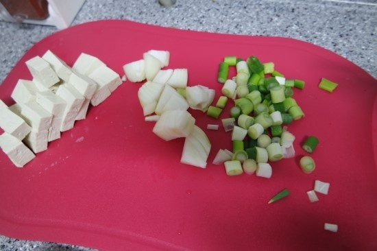
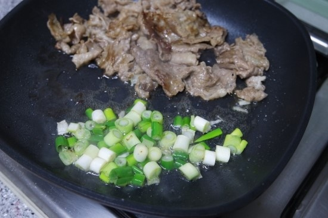
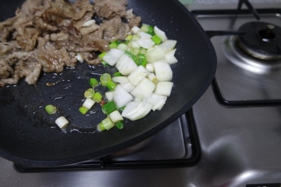
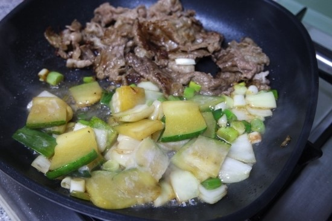
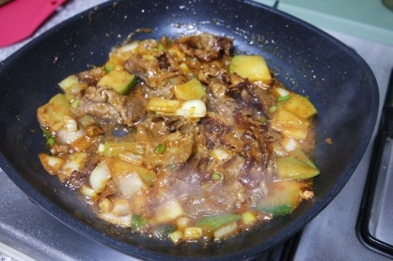
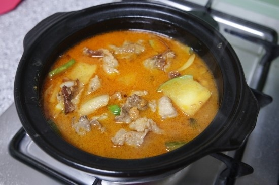
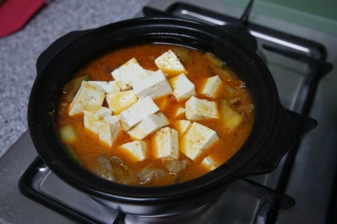
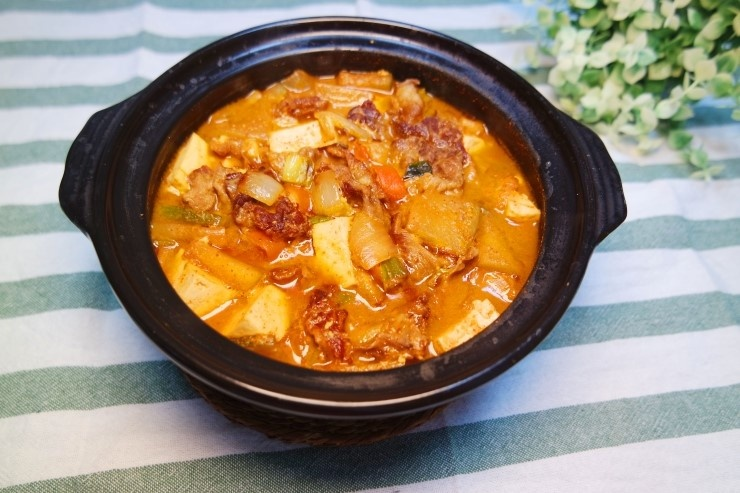

차돌박이 된장찌개
이번엔 좀 색다른 된장찌개를 끓여봤어요. 얼마전 해먹었던 차돌박이가 조금 남아있길래 차돌박이로 된장찌개를 끓였어요. 식당에서 나오는 느낌의 차돌박이된장찌개 한번 드셔보실래요?
조리시간 : 30분 이내
재료
차돌박이(약한줌) 150g
양파 1/8개
호박 1/4개
두부 1/4모
청양고추 2개
버섯 약간
대파 1/2뿌리
소금 약간
후추 약간
다시육수 적당량
조리 순서
| 1. 차돌박이를 먹기좋은 크기로 썰어서 후라이팬이 달궈지면 구워요. 이때 소금후추로 살짝 간을 해주세요.(된장맛이 더 잘 스며들고 좋아요.) |

|
| 2. 대파는 큼직하게 송송 썰으세요. |  |
| 3. 너무 센불에서 굽지마시고 중불로 굽다가 기름이 나오면 한군데로 모아서 기름을 모아서 그 기름으로 대파를 볶아요.(파기름내는거에요.) |  |
| 4. 양파는 큼직하게 썰어서 파향이 나면 같이 볶아줘요. |  |
| 5. 호박은 한입크기로 썰어서 같이 볶아주세요. |  |
| 6. 이래야 간이 잘 스며들어요~ 이제 다시육수(멸치는 빼고 다시마로만 육수를 내주세요-그래야 차돌향이 더 강하게나와요.) 육수조금과 된장3숟가락과 고춧가루를 넣고 잘 개서 된장을 후라이팬에 적당량 덜어서 같이 볶아주세요. |  |
| 7. 얼추 볶아지면 냄비에 옮겨담고 육수를 자박하게 넣고 나머지 된장을 넣으세요. |  |
| 8. 한소큼 끓이다가 두부와 청양고추를 넣고 3분간 더 끓이면 완성이에요. |  |
| 9. 고소한 차돌과 된장이 잘 어우러진답니다. |  |